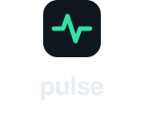

pulse.
The instrument panel of a live-streaming operation.
Pulse is self-hosted real-time analytics, QoE monitoring and alerting for Ant Media Server. This document defines how the brand looks, speaks, and behaves — in the product, on the web, and everywhere in between.
01 — STRATEGY & POSITIONING
Calm precision under pressure
POSITIONING STATEMENT
See every viewer, every stream, every node — in real time, on your own infrastructure.
WHO IT IS FOR
Streaming engineers, NOC operators and platform teams running self-hosted Ant Media Server — people on call who must answer "is the stream OK?" for paying customers, without shipping viewer data to a third party.
Read-only, by design
Pulse never touches the streaming stack. It observes. The brand is equally non-intrusive: quiet surfaces, one signal color.
Data never leaves
Self-hosted, no phone-home. The brand signals sovereignty: dark, contained, technical — never cloud-fluffy.
Part of the AMS ecosystem
Pulse is a module, not an island. It presents as an intelligent extension of Ant Media Server — the analytics organ of the stack.
PERSONALITY — 4 TRAITS, EACH WITH A BOUNDARY
Precise
but never pedantic
Calm
but never passive
Technical
but never cryptic
Confident
but never flashy
02 — LOGO
The signal line
One continuous stroke: a heartbeat that is also a bitrate sparkline. It reads at 16 px, animates naturally, and degrades gracefully to a neutral badge for white-label use.

FAVICON 16 / 32 / 48
WHITE-LABEL SDK BADGE
Clear space & minimums
Clear space = height of the mark's tile on all sides. Minimum sizes: lockup 24 px tall, mark 16 px, favicon uses the simplified 3-point line.
03 — COLOR
Dark base, one signal
Dashboard-first and dark-mode primary. Signal Green means one thing everywhere: live and healthy. Semantic colors are reserved for state — never decoration.
BASE — DARK THEME (PRIMARY)
SIGNAL — THE BRAND ACCENT
SEMANTIC — STATE ONLY (DARK / LIGHT VALUES)
States are always paired with a shape or label — dot, triangle, text — never color alone, so deuteranopia/protanopia viewers can distinguish healthy from critical. Warning amber and critical red differ in lightness as well as hue.
DATA VISUALIZATION — 8 CATEGORICAL SERIES
#2CE5A7
#58A6FF
#A78BFA
#F06BB2
#FFB224
#38D6E0
#C4B26A
#7C93AD
LIGHT THEME BASE
04 — TYPOGRAPHY
Two families, one job each
IBM Plex Sans for interface and prose; IBM Plex Mono for tokens, IDs, logs and axis labels. Both are OFL-licensed and self-hostable — a hard requirement for a no-phone-home product. No third family, ever.
IBM PLEX SANS — UI & PROSE
Ingest health degraded on edge-03
Weights 400 / 500 / 600 / 700. High x-height keeps dense tables legible at 13 px.
IBM PLEX MONO — TOKENS, IDS, LOGS
plt_9f3a1c… 200 OK
stream_id: live/edge-03-cam2
WARN rebuffer_ratio 4.2%
Weights 400 / 500. Anything a user might copy-paste is set in mono.
METRIC DISPLAY STYLE — TABULAR NUMERALS, UNIT SUFFIX AT 40%
12,847viewers
248ms
99.2%
Always font-variant-numeric: tabular-nums on metrics so digits never jitter as values update.
TYPE SCALE (1.25 RATIO, 4PX BASELINE)
05 — ICONOGRAPHY & ILLUSTRATION
Drawn like the logo: one stroke
ICON STYLE
- 24×24 grid, 1.75 px stroke, round caps and joins — matching the logo's line language
- Outline only; filled shapes reserved for state dots and badges
- Default color is text color; Signal Green only when the icon itself means "live/healthy"
- Recommended base set: Lucide (ISC license, self-hostable), customized to 1.75 px
ILLUSTRATION STYLE — "SCHEMATIC"
- Technical schematics, not scenes: nodes, flows, dashed connections on the dark base
- Neutral slate strokes; Signal Green marks the live path or Pulse itself
- No mascots, no people, no isometric 3D, no gradient blobs
- Real product UI is the preferred "illustration" wherever possible
06 — SPACING & LAYOUT
4px grid, density with air
SPACING SCALE (PX)
LAYOUT RULES
- App shell: 240 px fixed sidebar · fluid content · 12-col grid, 24 px gutters
- Card radius 12 px, controls 8 px, pills fully rounded — nothing else
- Elevation by border + tone, not shadow: raised surfaces get Ink 2 fill and Ink 3 border; shadows only on overlays
- Tables: 40 px rows, 13 px text, numeric columns right-aligned in tabular figures
- Marketing: 1160 px max content width, 96 px section rhythm
- Touch targets ≥ 44 px on mobile layouts
07 — VOICE & MESSAGING
Technical, direct, no hype
Write like a good runbook: lead with the fact, quantify everything, never exclaim. The reader is an engineer at 3 a.m. — respect their time.
✓ WE SAY
- "Stream visible on the dashboard ≤10 s after publish."
- "Alert fired. edge-03 ingest bitrate below 50% of target for 45 s."
- "Installs in minutes. Never modifies AMS."
- "Your data stays on your infrastructure. All of it."
✗ WE NEVER SAY
- "Supercharge your streaming empire! 🚀"
- "Oops! Something went wrong 😢"
- "Revolutionary AI-powered insights platform"
- "Unlock the power of next-gen observability"
MESSAGE HIERARCHY
Tagline
Know your stream is OK.
One-liner
Real-time analytics, QoE monitoring and alerting for Ant Media Server — self-hosted, read-only, live in minutes.
Proof points
≤10 s visibility · ≤5 s alerting · 3.5 KB beacon SDK · zero AMS modification · no phone-home
08 — USAGE RULES
Do / Don't
✓ Do
Use the dark lockup on Ink surfaces and the light lockup on paper. Keep one tile-height of clear space.
✓ Do
Pair "Pulse" with AMS context on first mention: "Pulse for Ant Media Server."
✓ Do
Use the neutral "powered by pulse" badge in white-labeled player SDKs.
✗ Don't
Recolor the signal line, add gradients to the mark, rotate it, or set the wordmark in another typeface.
✗ Don't
Use Signal Green decoratively, or for anything other than "live / healthy / primary action."
✗ Don't
Use emoji, exclamation marks, or hype language anywhere in product or marketing copy.